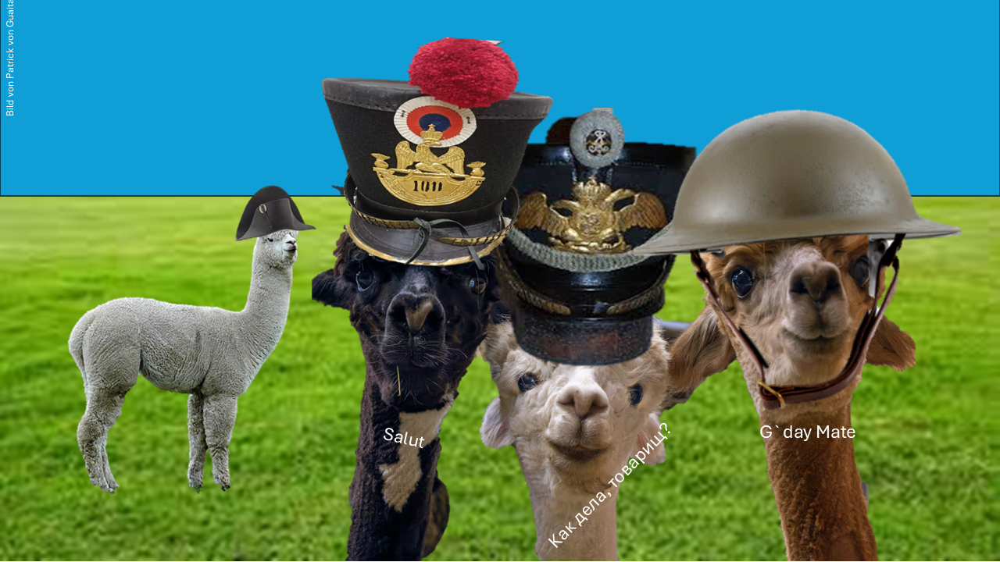

Ich finde Alpakas total süß und habe viel über sie gelernt. Deshalb möchte ich euch erzählen, was ich Spannendes über diese Tiere herausgefunden habe. Alpakas gehören wie die Lamas zur Familie der Kamele. Sie sehen ein bisschen aus wie kleine Teddybär-Kamele: freundlich, weich und ein bisschen tollpatschig. Ihr Gesicht wirkt sanft, ihre Ohren sind klein und ihre Schnauze ist kurz und rundlich. Alpakas mögen es nicht so gerne, wenn man sie anfasst oder bedrängt. Vom Rücken bis zum Boden sind sie nicht einmal einen Meter groß und wiegen etwa 60 Kilogramm. Ihre Wolle ist sehr weich – sogar weicher als die von Lamas – und wird deshalb besonders geschätzt. Manchmal werden Alpakas mit Lamas verwechselt. Dabei gibt es ein paar deutliche Unterschiede: Lamas können schwere Lasten tragen, Alpakas hingegen höchstens eine Wasserflasche. Das liegt daran, dass ihre Wirbelsäule empfindlicher ist. Außerdem haben Lamas längere, bananenförmige Ohren, während die Ohren der Alpakas kleiner und gerade sind. Das Alpaka stammt vom Vikunja ab. Seine Wolle gilt als besonders hochwertig – sie ist sogar feiner und weicher als Seide. Ich finde Alpakas einfach toll, weil sie so freundlich aussehen und so eine weiche Wolle haben. Vielleicht habt ihr ja auch mal die Gelegenheit, eines zu sehen – dann wisst ihr jetzt, woran man sie erkennt!
Autor: Lina Jurth
